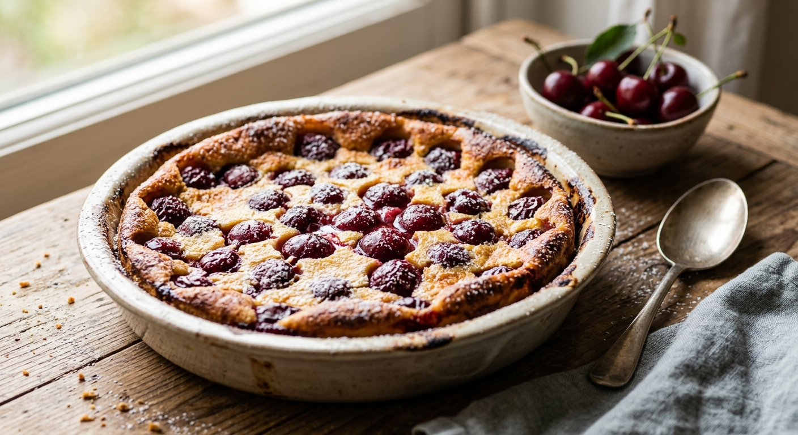

Matafan
Home

A cherry Clafoutis is a famous, traditional French country dessert hailing from the Limousin region,
highlighting the sweetness of seasonal cherries.
It consists of juicy fresh cherries blanketed in a rich, flan-like custard batter made of milk, eggs, flour, and sugar.
Baked until beautifully puffed and golden brown, it offers a comforting texture that perfectly balances the tartness of the fruit.
Ingredients
- 600g of cherries
- 40g of semi-salted butter + 20g for the mold
- 4 eggs
- 20cl of milk
- 100g of flour
- 60g of powdered sugar
- 1 packet of vanilla sugar
- 1 pinch of salt
Steps
- Preheat the oven to 210°C (410°F, thermostat 7). Wash the cherries quickly under cold water, pit them, and drain them.
Personally, I remove the pits, but the traditional recipe calls for leaving them in, so it's up to you whether you leave them or not...
- Melt the 40g of butter in a small, thick-bottomed saucepan. In a large bowl, mix the flour, sugar, salt, and vanilla sugar.
Incorporate the eggs one by one, then pour the milk in gradually while continuing to mix. Add the melted butter.
- Generously butter the baking dish, arrange the cherries, then pour the clafoutis batter over them.
- Bake for 10 minutes at 210°C (410°F), then lower the temperature to 180°C (350°F) and bake for another 20 minutes.
- Serve the clafoutis cold or lukewarm, dusted with powdered sugar.